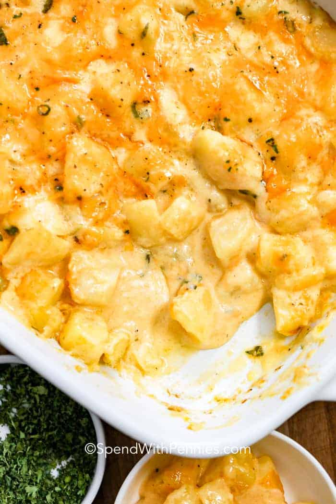

Cheesy Potatoes

Description
Who doesn't love cheese and potatoes? This is a great, quick and easy meal that only requires 4 ingridents. Super tasty and goes great with just about anything!
Ingredients
- 1 bag frozen diced potatoes
- 1 cup sour cream
- 1 can of cream of chicken soup
- 2 cups of cheddar jack cheese
Steps
- Put frozen potatoes in a slow cooker
- In a bowl combine the sour cream and cream of chicken soup and stir to combine. Pour mixture over potatoes
- Add cheese to the slow cooker and cook on high for four hours
- Enjoy!